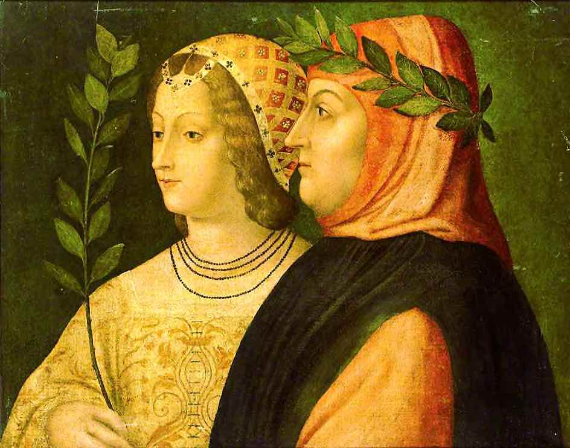
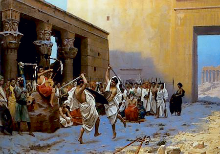
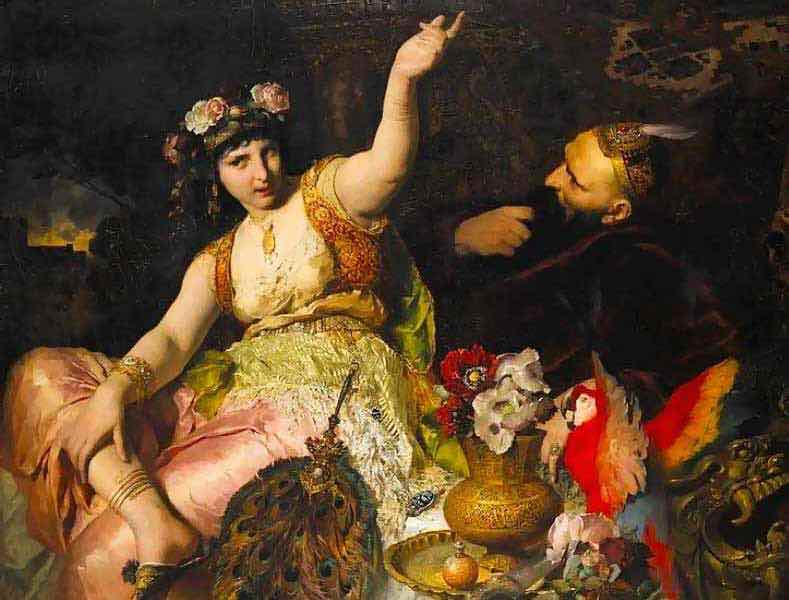
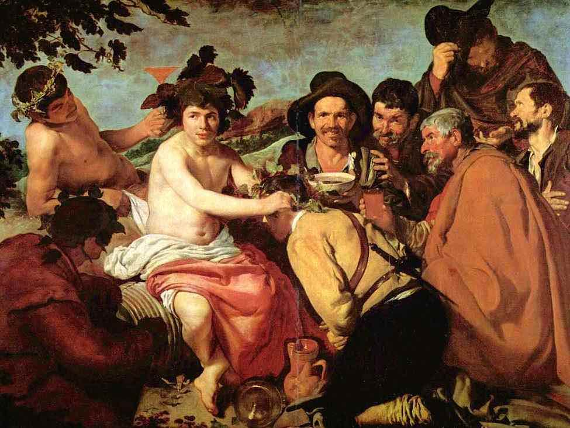
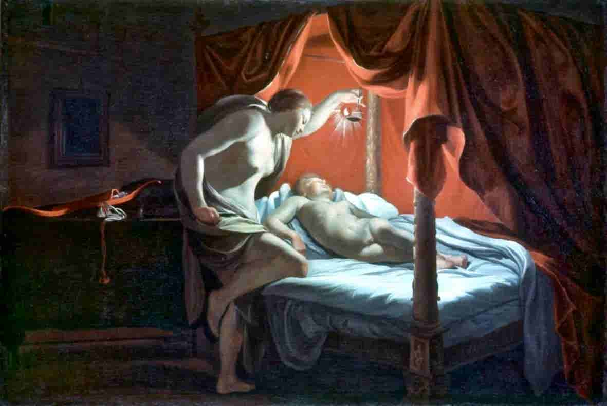
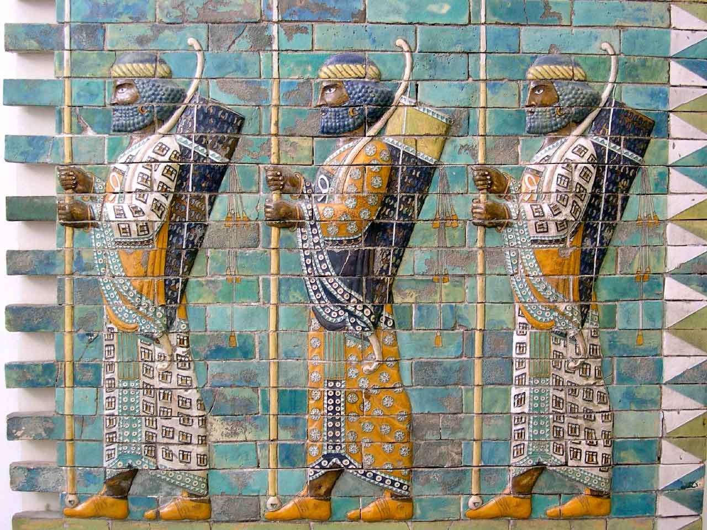
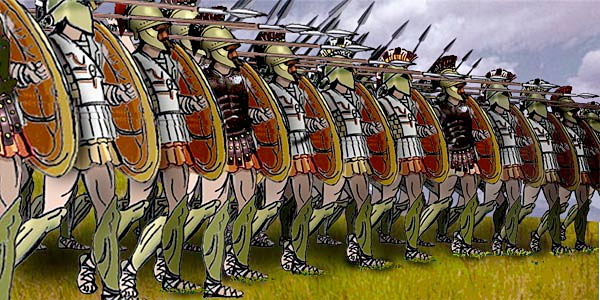

Canto illustrationThe Betrothal
Canto III develops the idyll of Juan and Haidée, at liberty on their Aegean isle and unaware of the approach of Haidée’s father, the pirate Lambro. Juan and Haidée hold a rich “wedding” feast at which a poet sings an ironic lament for the lost freedom of Greece under Ottoman rule. The happy day lengthens into evening. (This image is, of course, Ai generated.)
I
HAIL, Muse! et cetera.—We left Juan sleeping,
Pillowed upon a fair and happy breast,
And watched by eyes that never yet knew weeping,
And loved by a young heart, too deeply blest
To feel the poison through her spirit creeping,
Or know who rested there, a foe to rest,
Had soiled the current of her sinless years,
And turned her pure heart's purest blood to tears!
Hail Muse! etc.
Epics, by ancient tradition, begin with the Poet calling on the Muse for inspiration. Byron’s nod to the epic tradition, when he gets around to it finally, in the third Canto, is brief and off-hand. It’s a kind of poetic blasphemy. Here is Pope’s translation of the opening verses of Homer’s Oddessy:
Wandering from clime to clime, observant stray’d,
[]
The man for wisdom’s various arts renown’d,
Long exercised in woes, O Muse! resound;
Who, when his arms had wrought the destined fall
Of sacred Troy, and razed her heaven-built wall,
Wandering from clime to clime, observant stray’d,
Their manners noted, and their states survey’d,
On stormy seas unnumber’d toils he bore,
Safe with his friends to gain his natal shore…
0101010101010
Milton used twenty-six breathless lines to invoke his Muse at the start of Paradise Lost:
[]
Of Mans First Disobedience, and the Fruit
Of that Forbidden Tree, whose mortal tast
Brought Death into the World, and all our woe,
With loss of Eden, till one greater Man
Restore us, and regain the blissful Seat,
Sing Heav’nly Muse that on the secret top
Of Oreb, or of Sinai, didst inspire
That Shepherd, who first taught the chosen Seed,
In the Beginning how the Heav’ns and Earth
Rose out of Chaos …
The convention demanded humility, too, as here in second stanza of Spenser’s Faerie Queen:
001111100
[]
Helpe then, O holy Virgin chiefe of nine,
Thy weaker Nouice to performe thy will,
Lay forth out of thine euerlasting scryne
The antique rolles, which there lye hidden still,
Of Faerie knights and fairest Tanaquill,
Whom that most noble Briton Prince so long
Sought through the world, and suffered so much ill,
That I must rue his vndeserued wrong:
O helpe thou my weake wit, and sharpen my dull tong.
01010100
Perhaps Byron is boasting that he needs no heavenly inspiration. His epic is mundane, personal, modern. He resumes the story in the manner of a serial novel by reminding us of the last scene of Canto II. But he gets only as far as the second stanza before wandering away from the narrative again.
II
Oh, Love! what is it in this world of ours
Which makes it fatal to be loved? Ah why
With cypress branches hast thou wreathed thy bowers,
And made thy best interpreter a sigh?
As those who dote on odours pluck the flowers,
And place them on their breast—but place to die—
Thus the frail beings we would fondly cherish
Are laid within our bosoms but to perish.
⁂ Oh, Love! What is it…
III
In her first passion Woman loves her lover,
In all the others all she loves is Love,
Which grows a habit she can ne'er get over,
And fits her loosely—like an easy glove,
As you may find, whene'er you like to prove her:
One man alone at first her heart can move;
She then prefers him in the plural number,
Not finding that the additions much encumber.
IV
I know not if the fault be men's or theirs;
But one thing's pretty sure; a woman planted
(Unless at once she plunge for life in prayers)—
After a decent time must be gallanted;
Although, no doubt, her first of love affairs
Is that to which her heart is wholly granted;
Yet there are some, they say, who have had none,
But those who have ne'er end with only one.
V
'T is melancholy, and a fearful sign
Of human frailty, folly, also crime,
That Love and Marriage rarely can combine,
Although they both are born in the same clime;
Marriage from Love, like vinegar from wine—
A sad, sour, sober beverage—by Time
Is sharpened from its high celestial flavour
Down to a very homely household savour.
VI
There's something of antipathy, as 't were,
Between their present and their future state;
A kind of flattery that's hardly fair
Is used until the truth arrives too late—
Yet what can people do, except despair?
The same things change their names at such a rate;
For instance—Passion in a lover's glorious,
But in a husband is pronounced uxorious.
VII
Men grow ashamed of being so very fond;
They sometimes also get a little tired (But that, of course, is rare), and then despond:
The same things cannot always be admired,
Yet 't is “so nominated in the bond”,
That both are tied till one shall have expired.
Sad thought! to lose the spouse that was adorning
Our days, and put one's servants into mourning.
VIII
There's doubtless something in domestic doings
Which forms, in fact, true Love's antithesis;
Romances paint at full length people's wooings,
But only give a bust of marriages;
For no one cares for matrimonial cooings,
There's nothing wrong in a connubial kiss:
Think you, if Laura had been Petrarch's wife,
He would have written sonnets all his life?

If Laura had been Petrarch’s wife
Francesco Petrarca (1304-74) wrote scores of sonnets to a married woman named “Laura” (possibly Laura di Audiberto di Noves, depicted here) whom he first saw in a church in Avignon where his family had followed the Papal court. It is doubtful they had any relationship. Petrach never married but had two illegitimate children. He was a celebrated poet during his lifetime — mainly for a Latin epic poem celebrating the Roman general Scipio Africanus — and a friend of Boccaccio whom Byron admired.
IX
All tragedies are finished by a death,
All comedies are ended by a marriage;
The future states of both are left to faith,
For authors fear description might disparage
The worlds to come of both, or fall beneath,
And then both worlds would punish their miscarriage;
So leaving each their priest and prayer-book ready,
They say no more of Death or of the Lady.
X
The only two that in my recollection,
Have sung of Heaven and Hell, or marriage, are
Dante and Milton, and of both the affection
Was hapless in their nuptials, for some bar
Of fault or temper ruined the connection
(Such things, in fact, it don't ask much to mar);
But Dante's Beatrice and Milton's Eve
Were not drawn from their spouses, you conceive.
XI
Some persons say that Dante meant Theology
By Beatrice, and not a mistress—I,
Although my opinion may require apology,
Deem this a commentator's phantasy,
Unless indeed it was from his own knowledge he
Decided thus, and showed good reason why;
I think that Dante's more abstruse ecstatics
Meant to personify the Mathematics.
XII
Haidée and Juan were not married, but
The fault was theirs, not mine: it is not fair,
Chaste reader, then, in any way to put
The blame on me, unless you wish they were;
Then if you'd have them wedded, please to shut
The book which treats of this erroneous pair,
Before the consequences grow too awful;
'T is dangerous to read of loves unlawful.
XIII
Yet they were happy,—happy in the illicit
Indulgence of their innocent desires;
But more imprudent grown with every visit,
Haidée forgot the island was her Sire's;
When we have what we like 't is hard to miss it,
At least in the beginning, ere one tires;
Thus she came often, not a moment losing,
Whilst her piratical papa was cruising.
XIV
Let not his mode of raising cash seem strange,
Although he fleeced the flags of every nation,
For into a Prime Minister but change
His title, and 't is nothing but taxation;
But he, more modest, took an humbler range
Of Life, and in an honester vocation
Pursued o'er the high seas his watery journey,
And merely practised as a sea-attorney.
XV
The good old gentleman had been detained
By winds and waves, and some important captures;
And, in the hope of more, at sea remained,
Although a squall or two had damped his raptures,
By swamping one of the prizes; he had chained
His prisoners, dividing them like chapters
In numbered lots; they all had cuffs and collars,
And averaged each from ten to a hundred dollars.
XVI
Some he disposed of off Cape Matapan,
Among his friends the Mainots; some he sold
To his Tunis correspondents, save one man
Tossed overboard unsaleable (being old);
The rest—save here and there some richer one,
Reserved for future ransom—in the hold,
Were linked alike, as, for the common people, he
Had a large order from the Dey of Tripoli.
XVII
The merchandise was served in the same way,
Pieced out for different marts in the Levant,
Except some certain portions of the prey,
Light classic articles of female want,
French stuffs, lace, tweezers, toothpicks, a bidet,
Guitars and castanets from Alicant,
All which selected from the spoil he gathers,
Robbed for his daughter by the best of fathers.
XVIII
A monkey, a Dutch mastiff, a mackaw,
Two parrots, with a Persian cat and kittens,
He chose from several animals he saw—
A terrier, too, which once had been a Briton's,
Who dying on the coast of Ithaca,
The peasants gave the poor dumb thing a pittance:
These to secure in this strong blowing weather,
He caged in one huge hamper altogether.
XIX
Then, having settled his marine affairs,
Despatching single cruisers here and there,
His vessel having need of some repairs,
He shaped his course to where his daughter fair
Continued still her hospitable cares;
But that part of the coast being shoal and bare,
And rough with reefs which ran out many a mile,
His port lay on the other side o' the isle.
XX
And there he went ashore without delay,
Having no custom-house nor quarantine
To ask him awkward questions on the way,
About the time and place where he had been:
He left his ship to be hove down next day,
With orders to the people to careen;
So that all hands were busy beyond measure,
In getting out goods, ballast, guns, and treasure.
XXI
Arriving at the summit of a hill
Which overlooked the white walls of his home,
He stopped.—What singular emotions fill
Their bosoms who have been induced to roam!
With fluttering doubts if all be well or ill—
With love for many, and with fears for some;
All feelings which o'erleap the years long lost,
And bring our hearts back to their starting-post.
XXII
The approach of home to husbands and to sires,
After long travelling by land or water,
Most naturally some small doubt inspires—
A female family's a serious matter, (None trusts the sex more, or so much admires—
But they hate flattery, so I never flatter);
Wives in their husbands' absences grow subtler,
And daughters sometimes run off with the butler.
XXIII
An honest gentleman at his return
May not have the good fortune of Ulysses;
Not all lone matrons for their husbands mourn,
Or show the same dislike to suitors' kisses;
The odds are that he finds a handsome urn
To his memory—and two or three young misses
Born to some friend, who holds his wife and riches—
And that his Argus—bites him by the breeches.
XXIV
If single, probably his plighted Fair
Has in his absence wedded some rich miser;
But all the better, for the happy pair
May quarrel, and, the lady growing wiser,
He may resume his amatory care
As cavalier servente, or despise her;
And that his sorrow may not be a dumb one,
Writes odes on the Inconstancy of Woman.
XXV
And oh! ye gentlemen who have already
Some chaste liaison of the kind—I mean
An honest friendship with a married lady—
The only thing of this sort ever seen
To last—of all connections the most steady,
And the true Hymen, (the first's but a screen)—
Yet, for all that, keep not too long away—
I've known the absent wronged four times a day.
XXVI
Lambro, our sea-solicitor, who had
Much less experience of dry land than Ocean,
On seeing his own chimney-smoke, felt glad;
But not knowing metaphysics, had no notion
Of the true reason of his not being sad,
Or that of any other strong emotion;
He loved his child, and would have wept the loss of her,
But knew the cause no more than a philosopher.
XXVII
He saw his white walls shining in the sun,
His garden trees all shadowy and green;
He heard his rivulet's light bubbling run,
The distant dog-bark; and perceived between
The umbrage of the wood, so cool and dun,
The moving figures, and the sparkling sheen
Of arms (in the East all arm)—and various dyes
Of coloured garbs, as bright as butterflies.
Ali Pasha
The portrait of Lambro in Cantos III and IV recalls the wily Ali Pasha of Tepelen"e, a brigand, sadist, pederast and Ottoman tyrant of Albania and Western Greece. Byron stayed a few days with him in October 1809 during his tour of Greece with Cam Hobhouse. By the time he came to write Canto III, a decade later, Ali Pasha then in his 80s had revolted against the Sultan Mahmud II and had been deposed by overwhelming Turkish force. He was under arrest in a monastery on an island in the lake of Ionnania where the Turks assassinated him in 1822. This depiction of Ali Pasha is by a modern Albanian painter, Agim Sulaj.
Byron’s verse portrait of Ali can be found in Canto II of Childe Harold, drafted shortly after his visit:
The deeds that lurk beneath, and stain him with disgrace.
[]
In marble-pav’d pavilion, where a spring
Of living water from the centre rose,
Whose bubbling did a genial freshness fling,
And soft voluptuous couches breath’d repose,
Ali reclin’d, a man of war and woes;
Yet in his lineaments ye cannot trace,
While Gentleness her milder radiance throws
Along that aged venerable face,
The deeds that lurk beneath, and stain him with disgrace.
XXVIII
And as the spot where they appear he nears,
Surprised at these unwonted signs of idling,
He hears—alas! no music of the spheres,
But an unhallowed, earthly sound of fiddling!
A melody which made him doubt his ears,
The cause being past his guessing or unriddling;
A pipe, too, and a drum, and shortly after—
A most unoriental roar of laughter.
XXIX
And still more nearly to the place advancing,
Descending rather quickly the declivity,
Through the waved branches o'er the greensward glancing,
'Midst other indications of festivity,
Seeing a troop of his domestics dancing
Like Dervises, who turn as on a pivot, he
Perceived it was the Pyrrhic dance so martial,
To which the Levantines are very partial.

The Pyrrhic dance
The Pyrrhichios dance included combat-like movements, performed in full armour in close-order, that the Spartans used as military training for their phalanges. Homer describes Achilles dancing the pyrrhichios around the pyre of his friend Patroclus. This romantic rendering by Jean-Léon Gérôme hardly does a better job of conveying the military flavour than Byron’s inaccurate comparison with the the trance-inducing whirl of the Sufi sects called Dervishes. Later in this Canto, the “trimmer” poet mentions the Pyrrhichios, again.
XXX
And further on a troop of Grecian girls,
The first and tallest her white kerchief waving,
Were strung together like a row of pearls,
Linked hand in hand, and dancing; each too having
Down her white neck long floating auburn curls— (The least of which would set ten poets raving);
Their leader sang—and bounded to her song
With choral step and voice the virgin throng.
XXXI
And here, assembled cross-legged round their trays,
Small social parties just begun to dine;
Pilaus and meats of all sorts met the gaze,
And flasks of Samian and of Chian wine,
And sherbet cooling in the porous vase;
Above them their dessert grew on its vine;—
The orange and pomegranate nodding o'er,
Dropped in their laps, scarce plucked, their mellow store.
XXXII
A band of children, round a snow-white ram,
There wreathe his venerable horns with flowers;
While peaceful as if still an unweaned lamb,
The patriarch of the flock all gently cowers
His sober head, majestically tame,
Or eats from out the palm, or playful lowers
His brow, as if in act to butt, and then
Yielding to their small hands, draws back again.
XXXIII
Their classical profiles, and glittering dresses,
Their large black eyes, and soft seraphic cheeks,
Crimson as cleft pomegranates, their long tresses,
The gesture which enchants, the eye that speaks,
The innocence which happy childhood blesses,
Made quite a picture of these little Greeks;
So that the philosophical beholder
Sighed for their sakes—that they should e'er grow older.
XXXIV
Afar, a dwarf buffoon stood telling tales
To a sedate grey circle of old smokers,
Of secret treasures found in hidden vales,
Of wonderful replies from Arab jokers,
Of charms to make good gold and cure bad ails,
Of rocks bewitched that open to the knockers,
Of magic ladies who, by one sole act,
Transformed their lords to beasts (but that's a fact).
XXXV
Here was no lack of innocent diversion
For the imagination or the senses,
Song, dance, wine, music, stories from the Persian,
All pretty pastimes in which no offence is;
But Lambro saw all these things with aversion,
Perceiving in his absence such expenses,
Dreading that climax of all human ills,
The inflammation of his weekly bills.

Stories from the PersianBryon knew classical Persian poetry in translation and used Persian models for his “Turkish Tales” (1813). The so-called “Arabian Nights” — more properly “The Thousand Nights and One Night” — is a collection of fantastic, romantic, heroic and picaresque tales that appear, from the names of the story-teller Sheherazade, and the ruler, Shahriyah, to have a Perisan origin. They first appeared in an English translation in 1706, so were probably known to Byron. But they are far from “innocent” as Sir Richard Burton’s un-expurgated, annotated version of 1885 demonstrated. The painting is by Ferdinand Keller.
XXXVI
Ah! what is man? what perils still environ
The happiest mortals even after dinner!
A day of gold from out an age of iron
Is all that Life allows the luckiest sinner;
Pleasure (whene'er she sings, at least) 's a Siren,
That lures, to flay alive, the young beginner;
Lambro's reception at his people's banquet
Was such as fire accords to a wet blanket.
XXXVII
He—being a man who seldom used a word
Too much, and wishing gladly to surprise
(In general he surprised men with the sword)
His daughter—had not sent before to advise
Of his arrival, so that no one stirred;
And long he paused to re-assure his eyes,
In fact much more astonished than delighted,
To find so much good company invited.
XXXVIII
He did not know (alas! how men will lie)
That a report (especially the Greeks)
Avouched his death (such people never die),
And put his house in mourning several weeks,—
But now their eyes and also lips were dry;
The bloom, too, had returned to Haidée's cheeks:
Her tears, too, being returned into their fount,
She now kept house upon her own account.
XXXIX
Hence all this rice, meat, dancing, wine, and fiddling,
Which turned the isle into a place of pleasure;
The servants all were getting drunk or idling,
A life which made them happy beyond measure.
Her father's hospitality seemed middling,
Compared with what Haidée did with his treasure;
'T was wonderful how things went on improving,
While she had not one hour to spare from loving.
XL
Perhaps you think, in stumbling on this feast,
He flew into a passion, and in fact
There was no mighty reason to be pleased;
Perhaps you prophesy some sudden act,
The whip, the rack, or dungeon at the least,
To teach his people to be more exact,
And that, proceeding at a very high rate,
He showed the royal penchants of a pirate.
XLI
You're wrong.—He was the mildest mannered man
That ever scuttled ship or cut a throat;
With such true breeding of a gentleman,
You never could divine his real thought;
No courtier could, and scarcely woman can
Gird more deceit within a petticoat;
Pity he loved adventurous life's variety,
He was so great a loss to good society.
XLII
Advancing to the nearest dinner tray,
Tapping the shoulder of the nighest guest,
With a peculiar smile, which, by the way,
Boded no good, whatever it expressed,
He asked the meaning of this holiday;
The vinous Greek to whom he had addressed
His question, much too merry to divine
The questioner, filled up a glass of wine,

The vinous Greek
Velazquez’ image of The Triumph of Bacchus, a Roman rather than “vinous Greek”, depicts a group of engaging, rustic drunks and a distracted god. The three yokels that Lambro interrogates are part plot device: they reveal the reason for the party and also provoke Lambro with the news he has been usurped in his own domain. They are also part comic delay in the manner of the Gravedigger in Hamlet or the Gatekeeper in MacBeth. Byron gives them the only vernacular dialogue in the Canto; directly quoted, unlike Lambro’s questions.
XLIII
And without turning his facetious head,
Over his shoulder, with a Bacchant air,
Presented the o'erflowing cup, and said,
“Talking's dry work, I have no time to spare.”
A second hiccuped, “Our old Master's dead,
You'd better ask our Mistress who's his heir.”
“Our Mistress!” quoth a third: “Our Mistress!—pooh!
You mean our Master—not the old, but new."
XLIV
These rascals, being new comers, knew not whom
They thus addressed—and Lambro's visage fell—
And o'er his eye a momentary gloom
Passed, but he strove quite courteously to quell
The expression, and endeavouring to resume
His smile, requested one of them to tell
The name and quality of his new patron,
Who seemed to have turned Haidée into a matron.
XLV
“I know not," quoth the fellow, “who or what
He is, nor whence he came—and little care;
But this I know, that this roast capon's fat,
And that good wine ne'er washed down better fare;
And if you are not satisfied with that,
Direct your questions to my neighbour there;
He'll answer all for better or for worse,
For none likes more to hear himself converse.”
XLVI
I said that Lambro was a man of patience,
And certainly he showed the best of breeding,
Which scarce even France, the Paragon of nations,
E'er saw her most polite of sons exceeding;
He bore these sneers against his near relations,
His own anxiety, his heart, too, bleeding,
The insults, too, of every servile glutton,
Who all the time was eating up his mutton.
XLVII
Now in a person used to much command—
To bid men come, and go, and come again—
To see his orders done, too, out of hand—
Whether the word was death, or but the chain—
It may seem strange to find his manners bland;
Yet such things are, which I cannot explain,
Though, doubtless, he who can command himself
Is good to govern—almost as a Guelf.
XLVIII
Not that he was not sometimes rash or so,
But never in his real and serious mood;
Then calm, concentrated, and still, and slow,
He lay coiled like the Boa in the wood;
With him it never was a word and blow,
His angry word once o'er, he shed no blood,
But in his silence there was much to rue,
And his one blow left little work for two.
XLIX
He asked no further questions, and proceeded
On to the house, but by a private way,
So that the few who met him hardly heeded,
So little they expected him that day;
If love paternal in his bosom pleaded
For Haidée's sake, is more than I can say,
But certainly to one deemed dead returning,
This revel seemed a curious mode of mourning.
L
If all the dead could now return to life, (Which God forbid!) or some, or a great many,
For instance, if a husband or his wife (Nuptial examples are as good as any),
No doubt whate'er might be their former strife,
The present weather would be much more rainy—
Tears shed into the grave of the connection
Would share most probably its resurrection.
LI
He entered in the house no more his home,
A thing to human feelings the most trying,
And harder for the heart to overcome,
Perhaps, than even the mental pangs of dying;
dTo find our hearthstone turned into a tomb,
And round its once warm precincts palely lying
The ashes of our hopes, is a deep grief,
Beyond a single gentleman’s belief.
LII
He entered in the house—his home no more,
For without hearts there is no home;—and felt
The solitude of passing his own door
Without a welcome: there he long had dwelt,
There his few peaceful days Time had swept o'er,
There his worn bosom and keen eye would melt
Over the innocence of that sweet child,
His only shrine of feelings undefiled.
LIII
He was a man of a strange temperament,
Of mild demeanour though of savage mood,
Moderate in all his habits, and content
With temperance in pleasure, as in food,
Quick to perceive, and strong to bear, and meant
For something better, if not wholly good;
His Country's wrongs and his despair to save her
Had stung him from a slave to an enslaver.
LIV
The love of power, and rapid gain of gold,
The hardness by long habitude produced,
The dangerous life in which he had grown old,
The mercy he had granted oft abused,
The sights he was accustomed to behold,
The wild seas, and wild men with whom he cruised,
Had cost his enemies a long repentance,
And made him a good friend, but bad acquaintance.
LV
But something of the spirit of old Greece
Flashed o'er his soul a few heroic rays,
Such as lit onward to the Golden Fleece
His predecessors in the Colchian days;
'T is true he had no ardent love for peace—
Alas! his country showed no path to praise:
Hate to the world and war with every nation
He waged, in vengeance of her degradation.
LVI
Still o'er his mind the influence of the clime
Shed its Ionian elegance, which showed
Its power unconsciously full many a time,—
A taste seen in the choice of his abode,
A love of music and of scenes sublime,
A pleasure in the gentle stream that flowed
Past him in crystal, and a joy in flowers,
Bedewed his spirit in his calmer hours.
LVII
But whatsoe'er he had of love reposed
On that belovéd daughter; she had been
The only thing which kept his heart unclosed
Amidst the savage deeds he had done and seen,
A lonely pure affection unopposed:
There wanted but the loss of this to wean
His feelings from all milk of human kindness,
And turn him like the Cyclops mad with blindness.
LVIII
The cubless tigress in her jungle raging
Is dreadful to the shepherd and the flock;
The Ocean when its yeasty war is waging
Is awful to the vessel near the rock;
But violent things will sooner bear assuaging,
Their fury being spent by its own shock,
Than the stern, single, deep, and wordless ire
Of a strong human heart, and in a Sire.
LIX
It is a hard although a common case
To find our children running restive—they
In whom our brightest days we would retrace,
Our little selves re-formed in finer clay,
Just as old age is creeping on apace,
And clouds come o'er the sunset of our day,
They kindly leave us, though not quite alone,
But in good company—the gout or stone.
LX
Yet a fine family is a fine thing (Provided they don't come in after dinner);
'T is beautiful to see a matron bring
Her children up (if nursing them don't thin her);
Like cherubs round an altar-piece they cling
To the fire-side (a sight to touch a sinner).
A lady with her daughters or her nieces
Shine like a guinea and seven-shilling pieces.
LXI
Old Lambro passed unseen a private gate,
And stood within his hall at eventide;
Meantime the lady and her lover sate
At wassail in their beauty and their pride:
An ivory inlaid table spread with state
Before them, and fair slaves on every side;
Gems, gold, and silver, formed the service mostly,
Mother of pearl and coral the less costly.
LXII
The dinner made about a hundred dishes;
Lamb and pistachio nuts—in short, all meats,
And saffron soups, and sweetbreads; and the fishes
Were of the finest that e'er flounced in nets,
Dressed to a Sybarite's most pampered wishes;
The beverage was various sherbets
Of raisin, orange, and pomegranate juice,
Squeezed through the rind, which makes it best for use.
LXIII
These were ranged round, each in its crystal ewer,
And fruits, and date-bread loaves closed the repast,
And Mocha's berry, from Arabia pure,
In small fine China cups, came in at last;
Gold cups of filigree, made to secure
The hand from burning, underneath them placed;
Cloves, cinnamon, and saffron too were boiled
Up with the coffee, which (I think) they spoiled.
LXIV
The hangings of the room were tapestry, made
Of velvet panels, each of different hue,
And thick with damask flowers of silk inlaid;
And round them ran a yellow border too;
The upper border, richly wrought, displayed,
Embroidered delicately o'er with blue,
Soft Persian sentences, in lilac letters,
From poets, or the moralists their betters.
LXV
These Oriental writings on the wall,
Quite common in those countries, are a kind
Of monitors adapted to recall,
Like skulls at Memphian banquets, to the mind,
The words which shook Belshazzar in his hall,
And took his kingdom from him: You will find,
Though sages may pour out their wisdom's treasure,
There is no sterner moralist than Pleasure.
LXVI
A Beauty at the season's close grown hectic,
A Genius who has drunk himself to death,
A Rake turned methodistic, or Eclectic— (For that's the name they like to pray beneath)—
But most, an Alderman struck apoplectic,
Are things that really take away the breath,—
And show that late hours, wine, and love are able
To do not much less damage than the table.
LXVII
Haidée and Juan carpeted their feet
On crimson satin, bordered with pale blue;
Their sofa occupied three parts complete
Of the apartment—and appeared quite new;
The velvet cushions (for a throne more meet)
Were scarlet, from whose glowing centre grew
A sun embossed in gold, whose rays of tissue,
Meridian-like, were seen all light to issue.
LXVIII
Crystal and marble, plate and porcelain,
Had done their work of splendour; Indian mats
And Persian carpets, which the heart bled to stain,
Over the floors were spread; gazelles and cats,
And dwarfs and blacks, and such like things, that gain
Their bread as ministers and favourites (that's
To say, by degradation) mingled there
As plentiful as in a court, or fair.
LXIX
There was no want of lofty mirrors, and
The tables, most of ebony inlaid
With mother of pearl or ivory, stood at hand,
Or were of tortoise-shell or rare woods made,
Fretted with gold or silver:—by command
The greater part of these were rarely spread
With viands and sherbets in ice—and wine—
Kept for all comers at all hours to dine.
LXX
Of all the dresses I select Haidée's:
She wore two jelicks—one was of pale yellow;
Of azure, pink, and white was her chemise—
'Neath which her breast heaved like a little billow:
With buttons formed of pearls as large as peas,
All gold and crimson shone her jelick's fellow,
And the striped white gauze baracan that bound her,
Like fleecy clouds about the moon, flowed round her.
LXXI
One large gold bracelet clasped each lovely arm,
Lockless—so pliable from the pure gold
That the hand stretched and shut it without harm,
The limb which it adorned its only mould;
So beautiful—its very shape would charm,
And clinging, as if loath to lose its hold,
The purest ore enclosed the whitest skin
That e'er by precious metal was held in.
LXXII
Around, as Princess of her father's land,
A like gold bar above her instep rolled
Announced her rank; twelve rings were on her hand;
Her hair was starred with gems; her veil's fine fold
Below her breast was fastened with a band
Of lavish pearls, whose worth could scarce be told;
Her orange silk full Turkish trousers furled
About the prettiest ankle in the world.
LXXIII
Her hair's long auburn waves down to her heel
Flowed like an Alpine torrent which the sun
Dyes with his morning light,—and would conceal
Her person if allowed at large to run,
And still they seemed resentfully to feel
The silken fillet's curb, and sought to shun
Their bonds whene'er some Zephyr caught began
To offer his young pinion as her fan.
LXXIV
Round her she made an atmosphere of life,
The very air seemed lighter from her eyes,
They were so soft and beautiful, and rife
With all we can imagine of the skies,
And pure as Psyche ere she grew a wife—
Too pure even for the purest human ties;
Her overpowering presence made you feel
It would not be idolatry to kneel.

Pure as Psyche
In the Legend of the Golden Ass (about 150 CE), Lucius Apuleius, re-tells at length an older tale about the beautiful mortal girl Psyche — meaning “soul” or “life’s breath”, also a butterfly — whom the God of Love, Cupid, takes to his bed on the condition that she not try to discover his identity. She takes a peek one night while he is sleeping but the hot oil from her lamp falls on Cupid and wakes him. After many trials and dangers imposed by the jealous enmity of Cupid’s mother, Venus, the Boy god rescues her and Psyche joins the immortals. The stories of Haidée and Psyche have several parallels. But the Greek legend is, ultimately, a comedy because — as Byron explains earlier in the Canto — it ends with the marriage of Psyche and Cupid. Haidée’s story is a tragedy. There are two points in this Canto at which Byron makes idolatry out of the worship of feminine beauty; here, in describing Haidée and in the curious hymn to the Virgin Mary near the end. The painting is by Simon Vouet, early 17th century.
LXXV
Her eyelashes, though dark as night, were tinged (It is the country's custom), but in vain,
For those large black eyes were so blackly fringed,
The glossy rebels mocked the jetty stain,
And in their native beauty stood avenged:
Her nails were touched with henna; but, again,
The power of Art was turned to nothing, for
They could not look more rosy than before.
LXXVI
The henna should be deeply dyed to make
The skin relieved appear more fairly fair;
She had no need of this, day ne'er will break
On mountain tops more heavenly white than her:
The eye might doubt if it were well awake,
She was so like a vision; I might err,
But Shakespeare also says, 't is very silly
“To gild refinéd gold, or paint the lily.”
LXXVII
Juan had on a shawl of black and gold,
But a white baracan, and so transparent
The sparkling gems beneath you might behold,
Like small stars through the milky way apparent;
His turban, furled in many a graceful fold,
An emerald aigrette, with Haidée's hair in 't,
Surmounted as its clasp—a glowing crescent,
Whose rays shone ever trembling, but incessant.
LXXVIII
And now they were diverted by their suite,
Dwarfs, dancing girls, black eunuchs, and a poet,
Which made their new establishment complete;
The last was of great fame, and liked to show it;
His verses rarely wanted their due feet—
And for his theme—he seldom sung below it,
He being paid to satirise or flatter,
As the Psalm says, “inditing a good matter."
⁂ He praised the present …
LXXIX
He praised the present, and abused the past,
Reversing the good custom of old days,
An Eastern anti-jacobin at last
He turned, preferring pudding to no praise—
For some few years his lot had been o'ercast
By his seeming independent in his lays,
But now he sung the Sultan and the Pacha—
With truth like Southey, and with verse like Crashaw.
Eastern anti-jacobin
Byron makes fun of the poet’s lack of conviction; at first he had favored radical (“Jacobin”) political opinions but then, for the sake of money, he turned to praising Greece’s oppressive rulers (the Ottoman Turks), for money. Byron is suggesting the Poet is a mirror of Robert Southey who published radical verse while young but later took the "King’s shilling" to be Poet Laureate of England and a favorite of the Tories. In this performance at Haidée’s feast, the Poet — unlike Southey — tries to make up for his earlier apostasy by reverting to the opinions he held in his “warm youth”. Still, considering what we know already of Lambro’s sympathies, he takes little risk by urging revolt.
The Jacobins were a French political club of — at first, before the overthrow of the Bourbon monarchy in 1792 — deputies and moderate reformers so-called because they met at a former Dominican convent on the Rue St-Honoré in Paris. The Dominican order were known as “Jacobin” friars in Paris because they were first located in the Rue St Jacques near where the Sorbonne is now located. At one time or another, most of the famous names Byron invokes in the first verse of Canto I (Barnave, Mirabeau, Brissot, Condorcet, Pétion) were associated with the Jacobin club. The Club’s name was later, permanently attached to the murderous, radical faction (the “Montagnards”) of Robespierre.
Byron was no democrat or admirer of English radicals such as Tom Paine (associated with the Jacobins) or Richard Cobbett. But he despised the restoration of the oppressive, corrupt anciens régimes of Europe by the Congress of Vienna in 1815 at the instigation of the Tory governments of England and of Castlereagh as its Foreign Minister.
LXXX
He was a man who had seen many changes,
And always changed as true as any needle;
His Polar Star being one which rather ranges,
And not the fixed—he knew the way to wheedle:
So vile he 'scaped the doom which oft avenges;
And being fluent (save indeed when fee'd ill),
He lied with such a fervour of intention—
There was no doubt he earned his laureate pension.
LXXXI
But he had genius,—when a turncoat has it,
The Vates irritabilis takes care
That without notice few full moons shall pass it;
Even good men like to make the public stare:—
But to my subject—let me see—what was it?—
Oh!—the third canto—and the pretty pair—
Their loves, and feasts, and house, and dress, and mode
Of living in their insular abode.
LXXXII
Their poet, a sad trimmer, but, no less,
In company a very pleasant fellow,
Had been the favourite of full many a mess
Of men, and made them speeches when half mellow;
And though his meaning they could rarely guess,
Yet still they deigned to hiccup or to bellow
The glorious meed of popular applause,
Of which the First ne'er knows the second Cause.
LXXXIII
But now being lifted into high society,
And having picked up several odds and ends
Of free thoughts in his travels for variety,
He deemed, being in a lone isle, among friends,
That, without any danger of a riot, he
Might for long lying make himself amends;
And, singing as he sung in his warm youth,
Agree to a short armistice with Truth.
LXXXIV
He had travelled 'mongst the Arabs, Turks, and Franks,
And knew the self-loves of the different nations;
And having lived with people of all ranks,
Had something ready upon most occasions—
Which got him a few presents and some thanks.
He varied with some skill his adulations;
To “do at Rome as Romans do,” a piece
Of conduct was which he observed in Greece.
LXXXV
Thus, usually, when he was asked to sing,
He gave the different nations something national;
'T was all the same to him—“God save the King,”
Or “Ça ira," according to the fashion all:
His Muse made increment of anything,
From the high lyric down to the low rational;
If Pindar sang horse-races, what should hinder
Himself from being as pliable as Pindar?
LXXXVI
In France, for instance, he would write a chanson;
In England a six canto quarto tale;
In Spain he'd make a ballad or romance on
The last war—much the same in Portugal;
In Germany, the Pegasus he'd prance on
Would be old Goethe's—(see what says De Staël);
In Italy he'd ape the “Trecentisti;”
In Greece, he'd sing some sort of hymn like this t' ye:
The Trecentisti
The famous poets of the 13th century. From the right in Gorgio Vasari’s painting: Guido Cavalcanti, Dante Alighieri, Giovanni Boccaccio (actually, 14th century) and Francesco Petrarca. On the far left are the (15th century) humanist and man of letters Marsilio Ficino and the platonic philosopher Cristoforo Landino
The Isles of Greece
These sixteen lyrical stanzas have been widely reprinted by anthologists looking for a self-contained “capsule” of Don Juan. As a result, although they are not in ottava rima and are a digression from the narrative, they are probably the most widely known verses from the poem. Despite using the character of the “trimmer” Poet to attack Southey, this song is transparently Byron’s own call to the Greeks to honour their history and to rise up against their Turkish conquerors. It’s a surprising twist in the tale. So far, Byron’s “unplanned” epic had been farcical, naughty, adventurous, opinionated, but never quite serious. Now, in an unexpected place and form, Byron introduces a new element: contemporary geo-politics and a popular revolution whose cause he would eventually make his own. The uprising the Poet urges began just 18 months after Byron wrote these verses. Within six years, he died in its cause, despairing that it would succeed.
I
The Isles of Greece, the Isles of Greece!
Where burning Sappho loved and sung,
Where grew the arts of War and Peace,
Where Delos rose, and Phoebus sprung!
Eternal summer gilds them yet,
But all, except their Sun, is set.
II
The Scian and the Teian muse,
The Hero's harp, the Lover's lute,
Have found the fame your shores refuse:
Their place of birth alone is mute
To sounds which echo further west
Than your Sires' “Islands of the Blest.”
III
The mountains look on Marathon—
And Marathon looks on the sea;
And musing there an hour alone,
I dreamed that Greece might still be free;
For standing on the Persians' grave,
I could not deem myself a slave.
IV
A King sate on the rocky brow
Which looks o'er sea-born Salamis;
And ships, by thousands, lay below,
And men in nations;—all were his!
He counted them at break of day—
And, when the Sun set, where were they?

Persian archers
From the palace of Darius at Susa.
V
And where are they? and where art thou,
My Country? On thy voiceless shore
The heroic lay is tuneless now—
The heroic bosom beats no more!
And must thy Lyre, so long divine,
Degenerate into hands like mine?
VI
'T is something, in the dearth of Fame,
Though linked among a fettered race,
To feel at least a patriot's shame,
Even as I sing, suffuse my face;
For what is left the poet here?
For Greeks a blush—for Greece a tear.
VII
Must we but weep o'er days more blest?
Must we but blush?—Our fathers bled.
Earth! render back from out thy breast
A remnant of our Spartan dead!
Of the three hundred grant but three,
To make a new Thermopylæ!
VIII
What, silent still? and silent all?
Ah! no;—the voices of the dead
Sound like a distant torrent's fall,
And answer, “Let one living head,
But one arise,—we come, we come!”
'T is but the living who are dumb.
IX
In vain—in vain: strike other chords;
Fill high the cup with Samian wine!
Leave battles to the Turkish hordes,
And shed the blood of Scio's vine!
Hark! rising to the ignoble call—
How answers each bold Bacchanal!
X
You have the Pyrrhic dance as yet,
Where is the Pyrrhic phalanx gone?
Of two such lessons, why forget
The nobler and the manlier one?
You have the letters Cadmus gave—
Think ye he meant them for a slave?

Pyrrhic phalanx
The close-order formation of armed hoplites that allowed the Spartan Greeks to triumph over the lightly-armed archers of the Persian invasions.
XI
Fill high the bowl with Samian wine!
We will not think of themes like these!
It made Anacreon's song divine:
He served—but served Polycrates—
A Tyrant; but our masters then
Were still, at least, our countrymen.
XII
The Tyrant of the Chersonese
Was Freedom's best and bravest friend;
That tyrant was Miltiades!
Oh! that the present hour would lend
Another despot of the kind!
Such chains as his were sure to bind.
XIII
Fill high the bowl with Samian wine!
On Suli's rock, and Parga's shore,
Exists the remnant of a line
Such as the Doric mothers bore;
And there, perhaps, some seed is sown,
The Heracleidan blood might own.
XIV
Trust not for freedom to the Franks—
They have a king who buys and sells;
In native swords, and native ranks,
The only hope of courage dwells;
But Turkish force, and Latin fraud,
Would break your shield, however broad.
XV
Fill high the bowl with Samian wine!
Our virgins dance beneath the shade—
I see their glorious black eyes shine;
But gazing on each glowing maid,
My own the burning tear-drop laves,
To think such breasts must suckle slaves.
XVI
Place me on Sunium's marbled steep,
Where nothing, save the waves and I,
May hear our mutual murmurs sweep;
There, swan-like, let me sing and die:
A land of slaves shall ne'er be mine—
Dash down yon cup of Samian wine!
LXXXVII
Thus sung, or would, or could, or should have sung,
The modern Greek, in tolerable verse;
If not like Orpheus quite, when Greece was young,
Yet in these times he might have done much worse:
His strain displayed some feeling—right or wrong;
And feeling, in a poet, is the source
Of others' feeling; but they are such liars,
And take all colours—like the hands of dyers.
LXXXVIII
But words are things, and a small drop of ink,
Falling like dew, upon a thought, produces
That which makes thousands, perhaps millions, think;
'T is strange, the shortest letter which man uses
Instead of speech, may form a lasting link
Of ages; to what straits old Time reduces
Frail man, when paper—even a rag like this,
Survives himself, his tomb, and all that's his!
LXXXIX
And when his bones are dust, his grave a blank,
His station, generation, even his nation,
Become a thing, or nothing, save to rank
In chronological commemoration,
Some dull MS. Oblivion long has sank,
Or graven stone found in a barrack's station
In digging the foundation of a closet,
May turn his name up, as a rare deposit.
XC
And Glory long has made the sages smile;
'T is something, nothing, words, illusion, wind—
Depending more upon the historian's style
Than on the name a person leaves behind:
Troy owes to Homer what whist owes to Hoyle:
The present century was growing blind
To the great Marlborough's skill in giving knocks,
Until his late Life by Archdeacon Coxe.
XCI
Milton's the Prince of poets—so we say;
A little heavy, but no less divine:
An independent being in his day—
Learned, pious, temperate in love and wine;
But, his life falling into Johnson's way,
We're told this great High Priest of all the Nine
Was whipped at college—a harsh sire—odd spouse,
For the first Mrs. Milton left his house.
XCII
All these are, certes, entertaining facts,
Like Shakespeare's stealing deer, Lord Bacon's bribes;
Like Titus' youth, and Cæsar's earliest acts;
Like Burns (whom Doctor Currie well describes);
Like Cromwell's pranks;—but although Truth exacts
These amiable descriptions from the scribes,
As most essential to their Hero's story,
They do not much contribute to his glory.
Southey… Wordsworth
Byron wrote verses XCIII–XCV before the publication of Cantos I and II on 15 July, 1819. At the time he did not expect his — hilarious, scurrilous — “Dedication” of the entire poem to Southey would be published. His friends in England and his publisher Murray urged him to cut it. So these verses contain the same sentiments as the Dedication, expressed with less vigor.
⁂ All are not moralists…
XCIII
All are not moralists, like Southey, when
He prated to the world of “Pantisocracy;”
Or Wordsworth unexcised, unhired, who then
Seasoned his pedlar poems with Democracy;
Or Coleridge long before his flighty pen
Let to the Morning Post its aristocracy;
When he and Southey, following the same path,
Espoused two partners (milliners of Bath).
XCIV
Such names at present cut a convict figure,
The very Botany Bay in moral geography;
Their loyal treason, renegado rigour,
Are good manure for their more bare biography;
Wordsworth's last quarto, by the way, is bigger
Than any since the birthday of typography;
A drowsy, frowzy poem, called the “Excursion,”
Writ in a manner which is my aversion.
XCV
He there builds up a formidable dyke
Between his own and others' intellect;
But Wordsworth's poem, and his followers, like
Joanna Southcote's Shiloh and her sect,
Are things which in this century don't strike
The public mind,—so few are the elect;
And the new births of both their stale Virginities
Have proved but Dropsies, taken for Divinities.
XCVI
But let me to my story: I must own,
If I have any fault, it is digression,
Leaving my people to proceed alone,
While I soliloquize beyond expression:
But these are my addresses from the throne,
Which put off business to the ensuing session:
Forgetting each omission is a loss to
The world, not quite so great as Ariosto.
XCVII
I know that what our neighbours call “longueurs,”
(We've not so good a word, but have the thing,
In that complete perfection which insures
An epic from Bob Southey every spring—)
Form not the true temptation which allures
The reader; but 't would not be hard to bring
Some fine examples of the Epopée,
To prove its grand ingredient is Ennui.
XCVIII
We learn from Horace, “Homer sometimes sleeps;”
We feel without him,—Wordsworth sometimes wakes,—
To show with what complacency he creeps,
With his dear “Waggoners,” around his lakes.
He wishes for “a boat” to sail the deeps—
Of Ocean?—No, of air; and then he makes
Another outcry for “a little boat,”
And drivels seas to set it well afloat.
XCIX
If he must fain sweep o'er the ethereal plain,
And Pegasus runs restive in his “Waggon,”
Could he not beg the loan of Charles's Wain?
Or pray Medea for a single dragon?
Or if, too classic for his vulgar brain,
He feared his neck to venture such a nag on,
And he must needs mount nearer to the moon,
Could not the blockhead ask for a balloon?
C
“Pedlars,” and “Boats,” and “Waggons!” Oh! ye shades
Of Pope and Dryden, are we come to this?
That trash of such sort not alone evades
Contempt, but from the bathos' vast abyss
Floats scumlike uppermost, and these Jack Cades
Of sense and song above your graves may hiss—
The “little boatman” and his Peter Bell
Can sneer at him who drew “Achitophel!”
CI
T' our tale.—The feast was over, the slaves gone,
The dwarfs and dancing girls had all retired;
The Arab lore and Poet's song were done,
And every sound of revelry expired;
The lady and her lover, left alone,
The rosy flood of Twilight's sky admired;—
Ave Maria! o'er the earth and sea,
That heavenliest hour of Heaven is worthiest thee!
CII
Ave Maria! blesséd be the hour!
The time, the clime, the spot, where I so oft
Have felt that moment in its fullest power
Sink o'er the earth—so beautiful and soft—
While swung the deep bell in the distant tower,
Or the faint dying day-hymn stole aloft,
And not a breath crept through the rosy air,
And yet the forest leaves seemed stirred with prayer.
CIII
Ave Maria! 't is the hour of prayer!
Ave Maria! 't is the hour of Love!
Ave Maria! may our spirits dare
Look up to thine and to thy Son's above!
Ave Maria! oh that face so fair!
Those downcast eyes beneath the Almighty Dove—
What though 't is but a pictured image?—strike—
That painting is no idol,—'t is too like.
CIV
Some kinder casuists are pleased to say,
In nameless print—that I have no devotion;
But set those persons down with me to pray,
And you shall see who has the properest notion
Of getting into Heaven the shortest way;
My altars are the mountains and the Ocean,
Earth, air, stars—all that springs from the great Whole,
Who hath produced, and will receive the Soul.
⁂ Sweet hour of twilight
CV
Sweet Hour of Twilight!—in the solitude
Of the pine forest, and the silent shore
Which bounds Ravenna's immemorial wood,
Rooted where once the Adrian wave flowed o'er,
To where the last Cæsarean fortress stood,
Evergreen forest! which Boccaccio's lore
And Dryden's lay made haunted ground to me,
How have I loved the twilight hour and thee!
CVI
The shrill cicalas, people of the pine,
Making their summer lives one ceaseless song,
Were the sole echoes, save my steed's and mine,
And Vesper bell's that rose the boughs along;
The spectre huntsman of Onesti's line,
His hell-dogs, and their chase, and the fair throng
Which learned from this example not to fly
From a true lover,—shadowed my mind's eye.
CVII
Oh, Hesperus! thou bringest all good things—
Home to the weary, to the hungry cheer,
To the young bird the parent's brooding wings,
The welcome stall to the o'erlaboured steer;
Whate'er of peace about our hearthstone clings,
Whate'er our household gods protect of dear,
Are gathered round us by thy look of rest;
Thou bring'st the child, too, to the mother's breast.
CVIII
Soft Hour! which wakes the wish and melts the heart
Of those who sail the seas, on the first day
When they from their sweet friends are torn apart;